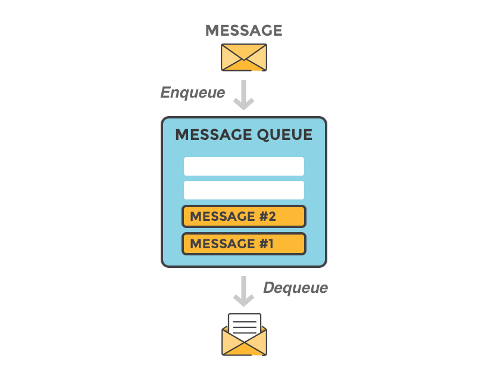

Improve
Biobricks

Platform
Message Queues

Some of the iGEM-Software projects have computing tasks that will consume lots of computation resources
during executing. Most of them handle both this kind of task and the services to users in the same
server. The characteristics increase the risk of reducing the user experience and even breaking down the
whole server.
Foresyn split our programs computing models from our website, and use message queues to send and receive information about our computation. A queue is a data structure that stores things waiting to be handled, and it obeys the "First Come, First Serve" principle. So, we can store our computing tasks in the queue, and response to users instantly about the progress of his tasks.
So the risk of breaking down does not exist anymore, and users can have a better experience.
References
- Figure 1: http://www.netimperative.com/2019/04/facebook-sheds-light-on-news-feed-and-advertising-algorithm-secrets/
- Figure 2: https://rawcliffe.co.uk/tax-news/emi-share-option-schemes/
- Figure 3: https://www.cloudamqp.com/blog/2014-12-03-what-is-message-queuing.html